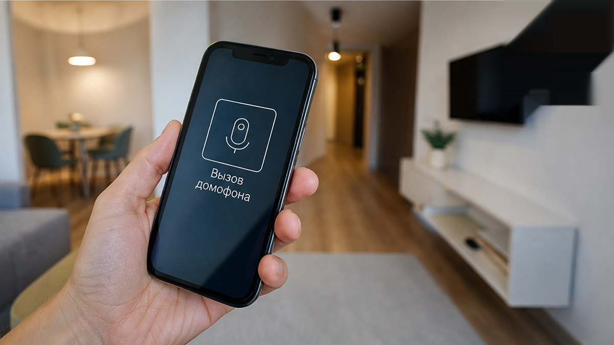
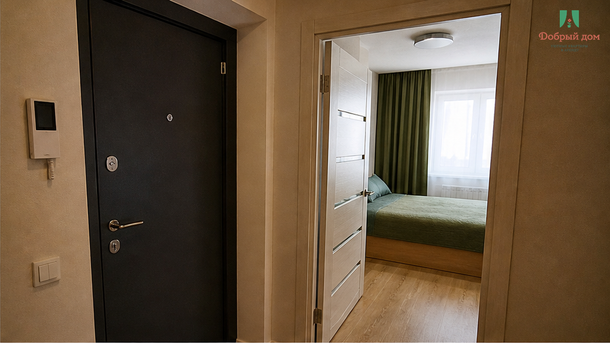
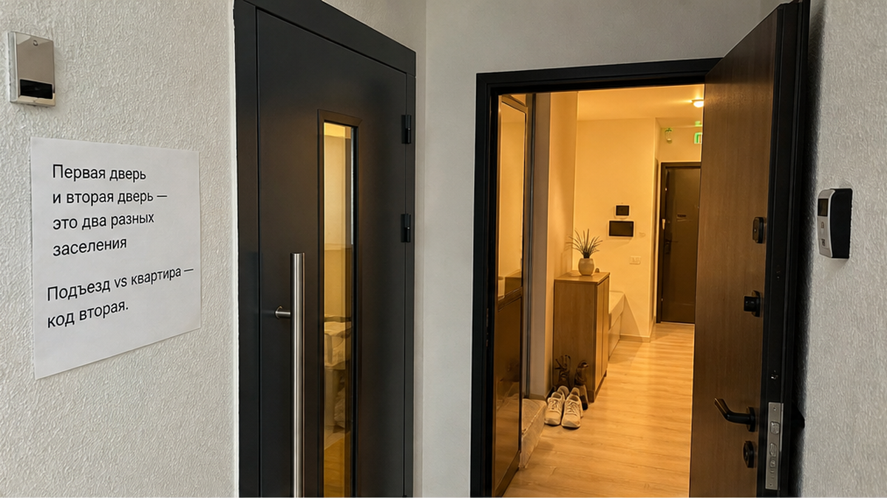
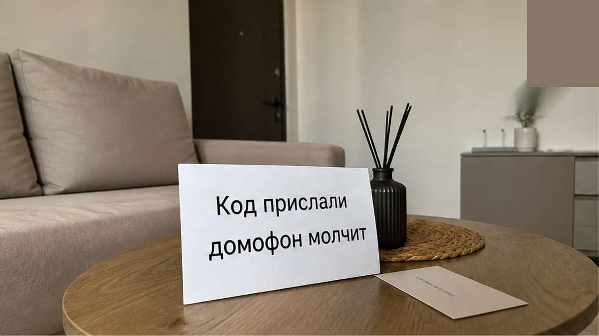
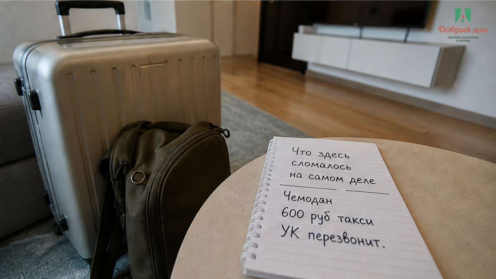
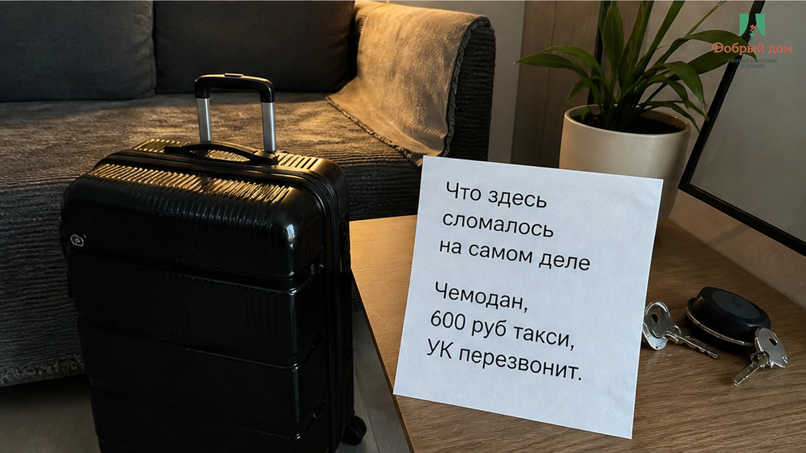
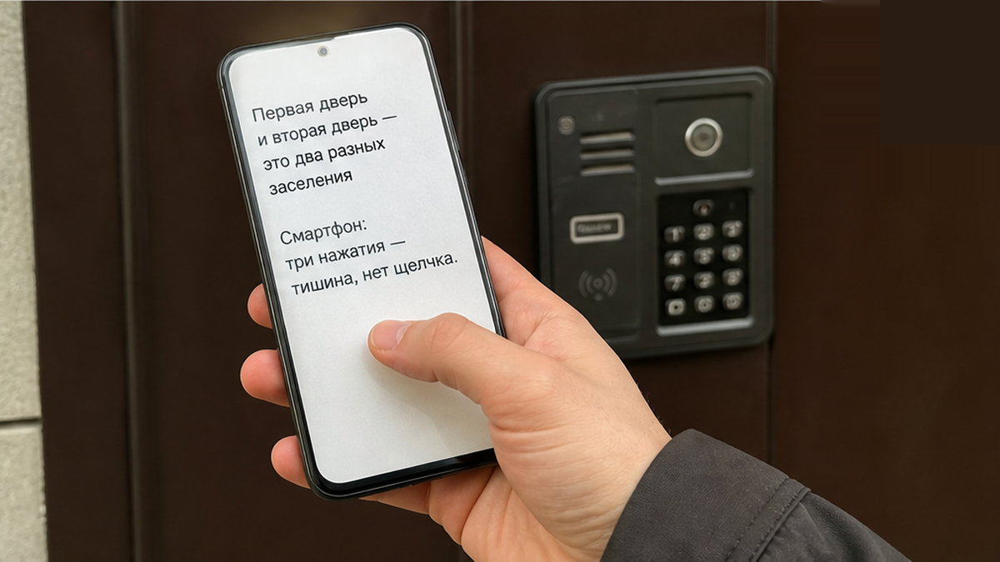

«Сейчас позвоню в управляющую, подождите». Это сообщение прилетело гостю в тот момент, когда он уже стоял у закрытого подъезда с чемоданом. Код от квартиры был в переписке заранее: четыре цифры, аккуратная приписка «бесконтактное заселение, ключница на месте». Адрес верный. Подъезд верный. Домофон нажали три раза — тишина. Ни ответа, ни щелчка замка, ни голоса в трубке. Такси уже уехало, а 600 ₽ за поездку остались самой бесполезной строчкой вечера.
20 минут человек стоял между чемоданом и дверью, на которую у него не было ничего. Сломалась не техника. Сломалась иллюзия: «код прислали» гость прочитал как «меня пустят». А код открывал вторую дверь. Первую не открывало ничего — и никто заранее не подумал, что первая вообще существует.
Я хост посуточной в Тюмени. Это «Добрый дом». Мы работаем через Telegram и MAX, и такие разборы я пишу не ради чужих ошибок. Через них лучше видно, где именно у гостя рвётся вечер.
Не забытый код. Не сломанный замок в квартире. А первая дверь подъезда, для которой не было ни второго способа входа, ни живого человека на связи.


Когда вы ищете квартиры посуточно в Тюмени и видите слово «бесконтактно», в голове складывается простая картинка: приехал, набрал цифры, зашёл, лёг спать. В реальности между вами и кроватью стоят два независимых рубежа: подъезд и квартира. У них разные замки, владельцы и правила. Домофон часто принадлежит дому и управляющей компании, а квартирный код — хозяину. Одно никогда не заменяет другое.
Самое неприятное: ключница нередко висит внутри подъезда. Код, который вам прислали, физически находится за дверью, которую вы не можете открыть. Вы держите ключ от комнаты, стоя снаружи здания. Похожую подмену я разбирал в истории, где адрес был правильным, а дверь и код — от другого сценария: бесконтактное заселение, когда код есть, а дверь чужая. Там ошибка была в адресации. Здесь — в самом этапе.
Это не то же самое, что попасть внутрь и обнаружить пустую коробочку на стене. Такой случай разобран отдельно: код сработал, а ключница оказалась пустой. Там человек хотя бы в тепле, у него есть свет, розетка и время подумать. Здесь — улица, чемодан и три нажатия в никуда.



Инструкция была неполной. В ней были адрес и код квартиры — и всё. Не было номера подъезда, способа открыть домофон, этажа и имени человека, который отвечает при позднем приезде. Фраза «сейчас позвоню в управляющую» — не план. Это импровизация в тот момент, когда импровизировать уже поздно.
Умный домофон тоже не спасает, если резерв не проговорён. Приложение может не открыть дверь из-за связи, настроек или невыданного доступа. В некоторых домах общий код жильцам не сообщают, и это нормально для безопасности. Но тогда у гостя должен быть другой, заранее проверенный способ. Бесконтактное заселение — не «отправили цифры и забыли». Это цепочка: улица, подъезд, этаж, дверь, связь. Сорвалось звено у входа — дальше не едет ничего.
Поэтому до перевода денег вопрос нужно задать прямо: как вы откроете подъезд, если домофон не ответит? Не квартиру. Подъезд. Если у хоста нет ответа в одну строку — «код такой-то», «наберите номер квартиры», «откроет приложение», «встречаю лично», — значит, ответа нет. Молчание в нужную минуту дорисует картину само: перевели предоплату — и получили тишину.
Как вы это читаете: «код прислали» — значит, можно ехать или подъезд уже открывается? Напишите в Telegram или MAX. Для меня это не формальность, а проверка всей цепочки глазами гостя.
И ещё: 600 ₽ в этой истории — не тариф и не прайс города, а сумма, которая сгорела зря. Обратно человек поехал бы уже за свои, второй раз. Так же тихо дорожает вечер, когда на месте выясняется, что «всё включено» включало не всё. Вот отдельная история об этом: хозяин сказал «всё включено», а в такси доплатили 2 400 ₽.
Нет. Так не заселяем. Считать код от квартиры полным заселением, не проверив вход в подъезд, — значит отправлять человека к двери, у которой он бессилен.


Заселение начинается не у квартиры, а у подъезда. Значит, проверять надо оттуда. Сначала проверка. Потом перевод. Один вопрос в переписке и минута времени лучше, чем 20 минут на улице с чемоданом и второе такси.
Не подбирайте цифры на домофоне, не заходите следом за жильцами и не пытайтесь обойти систему: это чужой дом. Но и бесконечно ждать фразу «управляющая перезвонит» не нужно. Пятнадцать минут без внятного ответа — уже ответ.
Код в чате — это ключ от комнаты, а не пропуск в здание. Пока не понятно, как открывается первая дверь, у вас на руках не бронь, а пустое обещание.
Если хотите заселение, где вход в подъезд проговорён до оплаты, напишите нам в Telegram или MAX, посмотрите свободные даты в брони или на сайте. Телефон: +7 (993) 574-83-22. Менеджер — здесь.